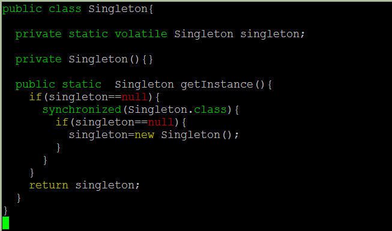
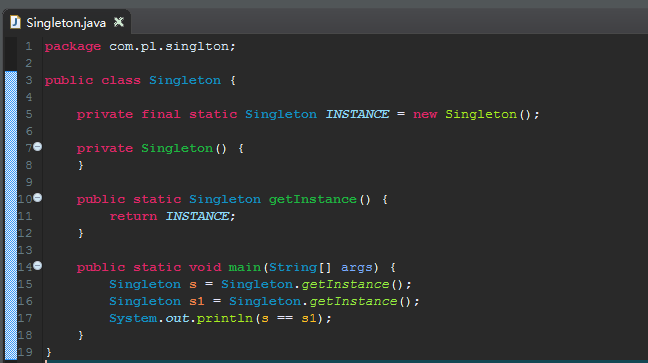
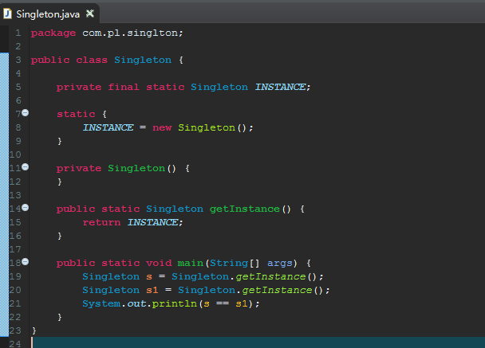
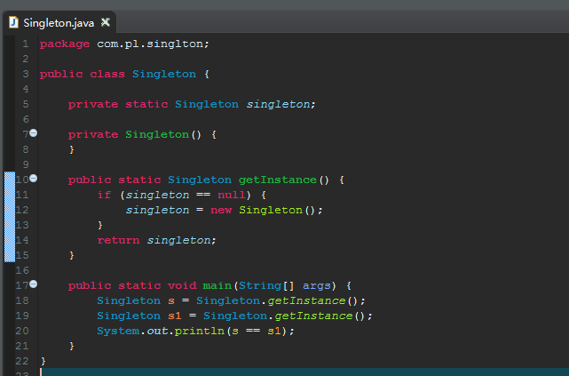
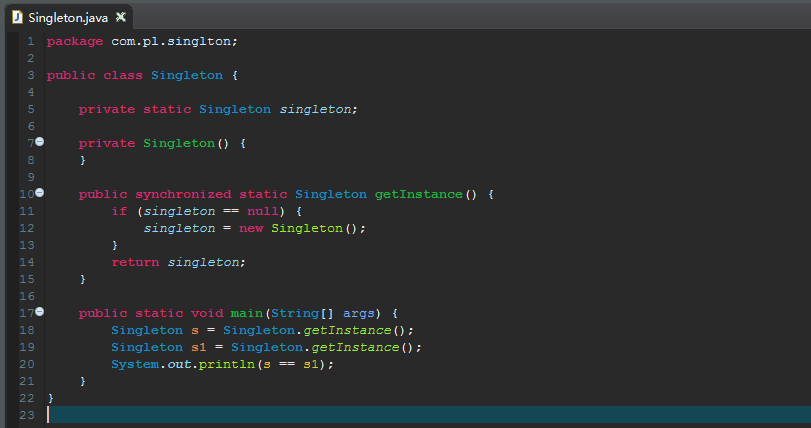
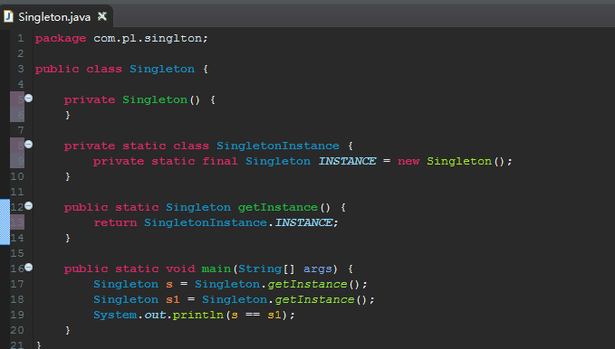

【最常用，推荐使用】双重检查

【可用】饿汉式（静态常量）
优点：这种写法比较简单，就是在类装载的时候就完成实例化。避免了线程同步问题。
缺点：在类装载的时候就完成实例化，没有达到Lazy Loading的效果。如果从始至终从未使用过这个实例，则会造成内存的浪费。

【可用】饿汉式（静态代码块）
优点：这种写法比较简单，就是在类装载的时候就完成实例化。避免了线程同步问题。
缺点：在类装载的时候就完成实例化，没有达到Lazy Loading的效果。如果从始至终从未使用过这个实例，则会造成内存的浪费。

【不可用】懒汉式(线程不安全)
优点：有延迟加载的效果
缺点：线程不安全，只能够在单线程中使用

【不推荐用】懒汉式(线程安全，同步方法)
优点：有延迟加载的效果，线程安全
缺点：由于使用了synchronized同步方法加锁，并发效率低下

【不可用】懒汉式(线程不安全，同步代码块)
优点：有延迟加载的效果
缺点：由于多个线程可能会同时进入到if判断里面，创建多个实例，线程不安全
【推荐用】静态内部类
